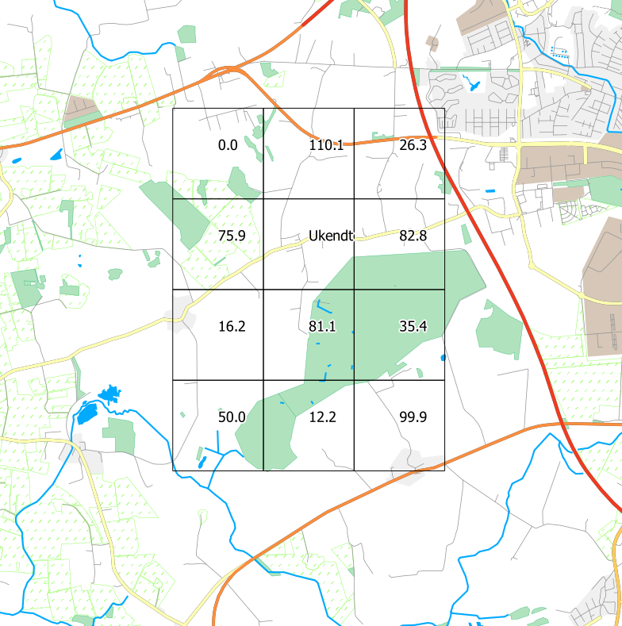

Brug Danmarks Højdemodel helt gratis
Kortdage 2013
Oversigt
- Introduktion til rasterdata
- Effektiv brug af Danmarks Højdemodel i QGIS
- HELE Danmarks Højdemodel i QGIS
- Beregninger på højdemodellen
Få slides - meget demo
Rasterdata

Disse data på rasterformat
ncols 3
nrows 4
xllcorner 700000
yllcorner 6200000
cellsize 1000
NODATA_value -999
0.0 110.1 26.3
75.9 -999 82.8
16.2 81.1 35.4
50.0 12.2 99.9
...og på vektorformat
POLYGON((700000.0 6204000.0,701000.0 6204000.0,701000.0 6203000.0,700000.0 6203000.0,700000.0 6204000.0)) 0.0
POLYGON((701000.0 6204000.0,702000.0 6204000.0,702000.0 6203000.0,701000.0 6203000.0,701000.0 6204000.0)) 110.1
POLYGON((702000.0 6204000.0,703000.0 6204000.0,703000.0 6203000.0,702000.0 6203000.0,702000.0 6204000.0)) 26.3
POLYGON((700000.0 6203000.0,701000.0 6203000.0,701000.0 6202000.0,700000.0 6202000.0,700000.0 6203000.0)) 75.9
POLYGON((701000.0 6203000.0,702000.0 6203000.0,702000.0 6202000.0,701000.0 6202000.0,701000.0 6203000.0)) Ukendt
POLYGON((702000.0 6203000.0,703000.0 6203000.0,703000.0 6202000.0,702000.0 6202000.0,702000.0 6203000.0)) 82.8
POLYGON((700000.0 6202000.0,701000.0 6202000.0,701000.0 6201000.0,700000.0 6201000.0,700000.0 6202000.0)) 16.2
POLYGON((701000.0 6202000.0,702000.0 6202000.0,702000.0 6201000.0,701000.0 6201000.0,701000.0 6202000.0)) 81.1
POLYGON((702000.0 6202000.0,703000.0 6202000.0,703000.0 6201000.0,702000.0 6201000.0,702000.0 6202000.0)) 35.4
POLYGON((700000.0 6201000.0,701000.0 6201000.0,701000.0 6200000.0,700000.0 6200000.0,700000.0 6201000.0)) 50.0
POLYGON((701000.0 6201000.0,702000.0 6201000.0,702000.0 6200000.0,701000.0 6200000.0,701000.0 6201000.0)) 12.2
POLYGON((702000.0 6201000.0,703000.0 6201000.0,703000.0 6200000.0,702000.0 6200000.0,702000.0 6201000.0)) 99.9
Danmarks Højdemodel
Hent data fra download.kortforsyningen.dk eller ftp.kortforsyningen.dk
Åbn QGIS
...og klø på!
Hovedpointer
Konvertér til GeoTIFF
GDAL
gdal_translate -of GTiff -ot float32 -a_srs epsg:25832 -co COMPRESS=lzw
-co PREDICTOR=2 -co tiled=yes DTM_bro_615_53.asc DTM_BRO_615_53.tif
Saml i én virtuel fil
GDAL
gdalbuildvrt -vrtnodata -9999 samlet_fil.vrt *.tif
Optimér til visualisering
GDAL
gdaladdo -r average samlet_fil.vrt 8 16 32 64 128 256 512 1024 2048